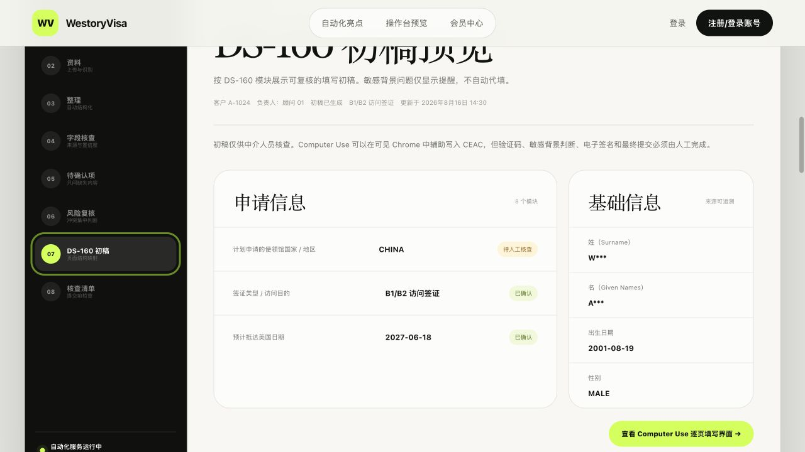

From documents to a reviewable workflow
让每一份客户材料，都能清楚推进。
WestoryVisa 为签证顾问与机构打造：材料读取、字段整理、缺失归集、风险复核，到 DS‑160 页面辅助填写。
路演演示版 · 全程保留人工控制From documents to a reviewable workflow
WestoryVisa 为签证顾问与机构打造：材料读取、字段整理、缺失归集、风险复核，到 DS‑160 页面辅助填写。
路演演示版 · 全程保留人工控制The workflow is fragmented
护照、学校文件、行程、聊天记录各自独立，已有答案仍被重复追问。
从文件到内部表，再到 DS‑160 页面，复制、核对、回查都依赖人工记忆。
字段来自哪里、为什么修改、还有什么没确认，往往不在同一个地方。
One case, one continuous workflow
自动化负责持续推进，顾问把时间留给判断、沟通与服务。
A four-minute live demo

“This school has been approved by the Student and Exchange Visitor Program…”
Evidence travels with every field
文件、页码与原文证据跟着字段保留。
二审只关注真正变化，不必重做全部工作。
客户已有的信息不再重复询问。
Human-in-the-loop by design
Proof, not adjectives
内部实测参考；不含验证码、人工复核、电子签名与最终提交。
建议口径：实际进入试点且有明确反馈的机构。
真实案件必须确认授权、隐私与处理边界。
建议用 10–30 个案件的前后对照，不使用主观估计。
不要临场编数字：没有留存、转化、准确率或客户评价证据时，直接说“正在试点验证”，可信度更高。
Simple starting model
材料识别、字段映射、客户补充、DS‑160 初稿与浏览器辅助。
包含完整工作流、团队协作与数据导出；按当前页面为十个月价格。
A concrete next step
联系人 / 微信 / 邮箱：[请填写]
Internal appendix
机构客户、渠道伙伴或投资人只能选一个主版本；最后一页只放一个下一步。
试点机构、案件数、节省时间、返工率与客户原话，全部保留计算口径。
法定名称、登记号、地址、客服联系方式尚未完成生产配置，真实支付当前关闭。
真实材料试跑前，完成客户授权、供应商数据保留与敏感信息处理评审。
包含护照、学校/工作、行程等样本，同时准备已处理完的备用状态。
现场网络、模型或政府页面不可用时，30 秒内切换，不现场排障。
准确率、数据安全、责任边界、竞品、定价、成本、部署和政府页面变化。
准备试点方案、一页介绍、二维码/联系方式和下一次会议日程。